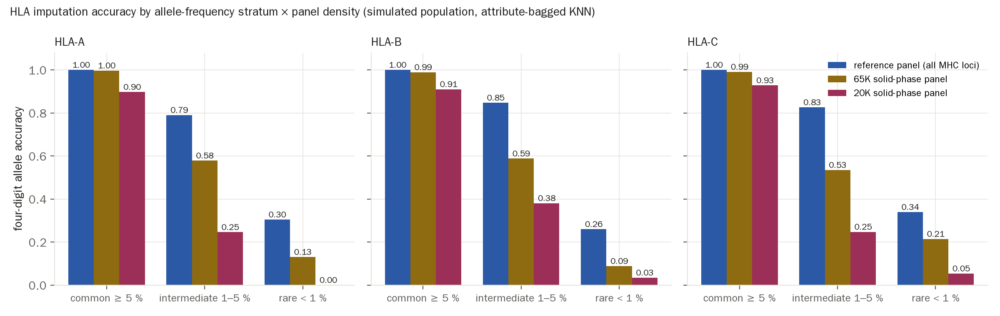
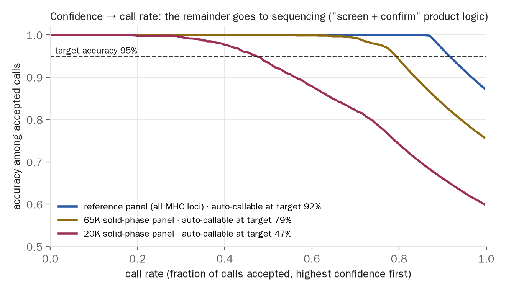
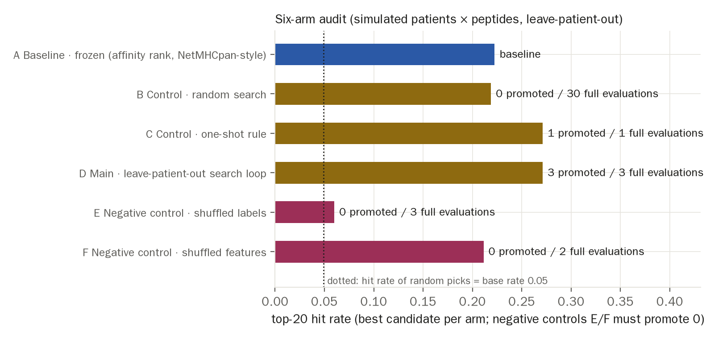
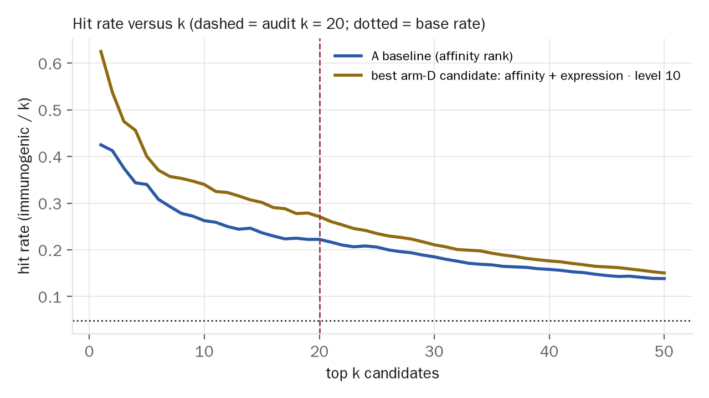

Against PRD v3 §3 Demo 4 and P-D4v3. The claim it serves: the judge is not only for breeding — any ranking algorithm about to be frozen for 5–7 years can take the same independent validation before the freeze; HLA typing is the wedge into the human line. Real data (1000 Genomes, a Chinese-population HLA reference panel, TESLA) are not yet in hand, so this page runs the pipeline and the report format on simulators whose assumptions are declared. Generated 2026-09-28 09:39 UTC, seed 4, config hash db66c66a1b84.
| Module | This version | Production version | Status |
|---|---|---|---|
| 4a Population and genotypes | Simulated 3,000 people, three class-I loci with 30/50/30 four-digit alleles, Zipf-shaped spectrum | 1000 Genomes + a Chinese-population HLA reference panel (PRD decision 3) | simulated |
| 4a Imputation model | Attribute-bagged KNN (12 bags × 40 % of loci, k=15); confidence = vote share | HIBAG (Zheng 2014) / SNP2HLA (Jia 2013) | same idea, simplified implementation |
| 4a Panel density | 100 % / 25 % / 8 % of MHC loci kept, standing in for reference / 65K / 20K | Down-sampling to the actual loci of the solid-phase panel | same algorithm |
| 4b Patients × peptides | Simulated 40 patients × 200 peptides, immunogenic base rate ≈ 5% | Public part of the TESLA consortium data (Wells 2020) | simulated |
| 4b Frozen baseline | Binding-affinity %rank order (NetMHCpan-style) | NetMHCpan-4.1 output (academic licence) | same format |
| 4b Six arms and gate | 5-fold leave-patient-out; bootstrap CI of paired top-20 gain; Bonferroni by attempts; negative controls E/F | Same (Demo 1's judging discipline reused) | implemented |
| 4b Audit report | audit_report.md: pre-freeze independent validation report with no algorithm internals (no weights in the report) | Same | implemented |

| Locus | Frequency stratum | reference panel (all MHC loci) | 65K solid-phase panel | 20K solid-phase panel |
|---|---|---|---|---|
| HLA-A | common ≥ 5 % | 1.000 | 0.997 | 0.897 |
| HLA-A | intermediate 1–5 % | 0.790 | 0.578 | 0.246 |
| HLA-A | rare < 1 % | 0.304 | 0.130 | 0.000 |
| HLA-B | common ≥ 5 % | 1.000 | 0.989 | 0.910 |
| HLA-B | intermediate 1–5 % | 0.847 | 0.588 | 0.380 |
| HLA-B | rare < 1 % | 0.260 | 0.088 | 0.034 |
| HLA-C | common ≥ 5 % | 1.000 | 0.991 | 0.928 |
| HLA-C | intermediate 1–5 % | 0.826 | 0.535 | 0.247 |
| HLA-C | rare < 1 % | 0.339 | 0.214 | 0.054 |
| Locus | reference panel (all MHC loci) | 65K solid-phase panel | 20K solid-phase panel |
|---|---|---|---|
| HLA-A | 0.891 | 0.799 | 0.607 |
| HLA-B | 0.818 | 0.689 | 0.568 |
| HLA-C | 0.900 | 0.773 | 0.617 |
Calls are ordered by confidence (vote share); only calls above a threshold are accepted and the rest go to sequencing. The curve answers the product question: to guarantee ≥ 95% accuracy on accepted calls, what share can the array decide by itself? The remainder is the cost of sequencing confirmation.
| Panel | Accuracy, all calls | Callable at ≥ 95% accuracy | Sent to sequencing |
|---|---|---|---|
| reference panel (all MHC loci) | 0.870 | 92% | 8% |
| 65K solid-phase panel | 0.754 | 79% | 21% |
| 20K solid-phase panel | 0.597 | 47% | 53% |

Alleles per locus by frequency stratum: {"HLA-A": {"common": 5, "intermediate": 20, "rare": 5}, "HLA-B": {"common": 4, "intermediate": 18, "rare": 28}, "HLA-C": {"common": 5, "intermediate": 20, "rare": 5}}. Raw tables: hla_accuracy.csv, hla_callrate.csv.

| Arm | Proposals | Full evaluations | Promoted | Best candidate top-20 hit rate | Paired gain vs baseline | Adjusted α |
|---|---|---|---|---|---|---|
| A Baseline · frozen (affinity rank, NetMHCpan-style) | — | 0 | 0 | 0.223 | — | — |
| B Control · random search | 30 | 30 | 0 | 0.219 | -0.004 [-0.039, +0.033] | 0.0033 |
| C Control · one-shot rule | 1 | 1 | 1 | 0.271 | +0.049 [+0.026, +0.073] | 0.1000 |
| D Main · leave-patient-out search loop | 90 | 3 | 3 | 0.271 | +0.049 [+0.019, +0.079] | 0.0333 |
| E Negative control · shuffled labels | 90 | 3 | 0 | 0.060 | +0.003 [-0.014, +0.020] | 0.0333 |
| F Negative control · shuffled features | 90 | 2 | 0 | 0.211 | -0.011 [-0.031, +0.008] | 0.0500 |

The formal pre-freeze independent validation report is audit_report.en.md: protocol, data hashes, gates and results only, with no candidate-algorithm internals (no weights, no feature recipe), so it can be written without reading the algorithm's source — that is the audit product.
bandwidth = samples_per_year / label_latency_years = 300 / 1.0 = 300 (assumption: one personalised-therapy company sends 300 patients a year to audit and immunogenicity / response labels return within a year).